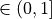

Fair Optimal Classification Trees#
In recent years, decision-makers have begun to use machine learning algorithms in socially sensitive, high-stakes domains with increasing frequency. For example, machine learning algorithms help decide who to give access to credit, government benefits, and public services, help guide policing, or assist with screening decisions for jobs/college admissions. Yet, decision-making systems based on standard machine learning algorithms may result in discriminative decisions as they may treat individuals unequally based on membership to a category or a group known as a protected or sensitive attribute. These attributes include but are not limited to age, disability, ethnicity, gender, marital status, national origin, race, religion, and sexual orientation.
FairTree is an extension of the optimal classification tree to learn optimal and fair decision trees satisfying the most common fairness requirements in the literature, including statistical parity, conditional statistical parity, predictive equality, equal opportunity, and equalized odds. Additional fairness metrics can be added upon request. In line with the literature FairTree currently provides an implementation for binary classification.
In addition to the typical inputs of binary classification problems, users must specify protected features as well as the positive label value. The positive label corresponds to the desired outcome in the classification problem. For example, in a hiring problem where one wants to decide whether to interview someone or not, being invited for an interview is regarded as the positive outcome.
Fairness Metrics#
The FairTreeClassifier is able to incorporate arbitrary domain specific fairness constraints when learning optimal classification trees. The type of fairness metric used is specified by the fairness_type parameter while the fairness_bound parameter controls how strictly the fairness constraints are enforced. As the fairness_bound approaches zero, the fairness constraints become more strict. Setting fairness_bound=1 is equivalent to enforcing no fairness constraint.
The following sections introduces the fairness metrics that are available to use with the FairTreeClassifier. The example notebook showcases statistical parity (SP) and predictive equality (PE). For a complete treatment of FairTrees, see the corresponding paper (Jo et al., 2021).
Statistical Parity#
A classifier satisfies statistical parity if the probability of receiving a positive class is equal across all protected groups. For example, in the hiring problem mentioned above, it may be appropriate to impose that the probability of receiving an interview should be similar across genders if people from different genders are equally likely to be meritorious. With the FairTreeClassifier one can bound the difference of the probability of receiving a positive class between two groups by setting fairness_type="SP" and choosing a value for fairness_bound between zero and 1.
Conditional Statistical Parity#
A classifier satisfies conditional statistical parity across protected groups if the probability of predicting the positive outcome is similar between all groups conditional on some feature, e.g., a legitimate feature that can justify differences across protected groups.
For example, in the problem of matching people experiencing homelessness to scarce housing resources, it is natural to require that the probability of receiving a resource among all individuals with the same vulnerability (risk) score should be similar across genders, races, or other protected attributes. The user needs to specify the value of the legitimate feature of each data point in vector  .
.
By setting fairness_type="CSP" and choosing a fairness_bound value between zero and one, a user can bound the difference of the conditional probability of receiving a positive class between two groups.
Predictive Equality#
A classifier satisfies predictive equality if it results in the same false positive rates across protected groups. For example, this fairness notion may be useful when using machine learning to predict if a convicted person will recidivate to decide if it is appropriate to release them on bail. Indeed, predictive equality in this context requires that, among defendants who would not have gone on to recidivate if released, detention rates should be similar across all races. One can bound the difference of false-positive rates between two groups choosing a fairness_bound value between zero and one and by setting fairness_type="PE".
Equal Opportunity#
A classifier satisfies equal opportunity if it results in the same true positive rates across protected groups. One can bound the difference of true-positive rates between two groups by setting fairness_type="EOpp" and choosing a fairness_bound value between zero and one.
Equalized Odds#
A classifier satisfies equalized odds if the predicted outcome and protected feature are independent conditional on the outcome. In other words, equalized odds require the same true positive and false positive rates across protected groups. For example, in the college admissions process, equalized odds require that no matter the applicant’s gender, they should get admitted at equal rates if they are qualified (or unqualified). One can use the equalized odds metric by specifying `fairness_type=EOdds”.
References#
Jo, N., Aghaei, S., Benson, J., Gómez, A., & Vayanos, P. (2022). Learning optimal fair classification trees. arXiv preprint arXiv:2201.09932. https://arxiv.org/pdf/2201.09932.pdf